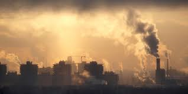

التلوث
التلوث من اكبر المشاكل التي تسبب خطر على البشري
من الاسباب الرئيسيه للتلوث هي الانبعاثات الصناعيه , التخلص الضعيف من النفايات, قطع الاشجار و
استعمال الوقود الاحفوري
ماهيه انواع التلوث؟
تلوث هوائي
تلوث مائي
تلوث ارضي
تلوث ضوئي
لكي نقلل من التلوث الهوائي
يجب علينا استعمال الدراجات بدل من السيارات
صور للتلوث الهوائي


 ٍ
ٍ